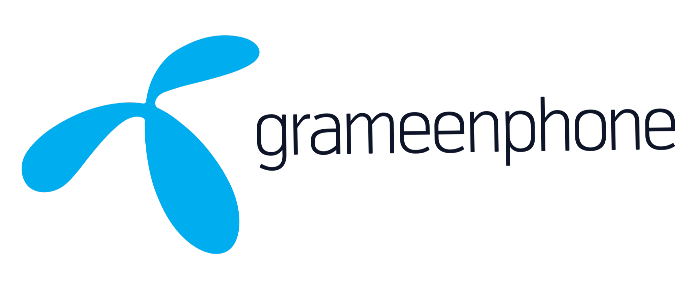
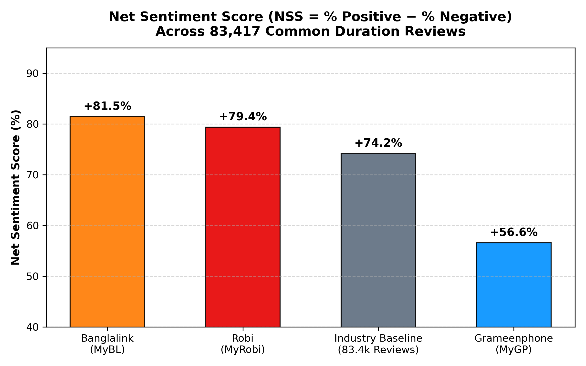
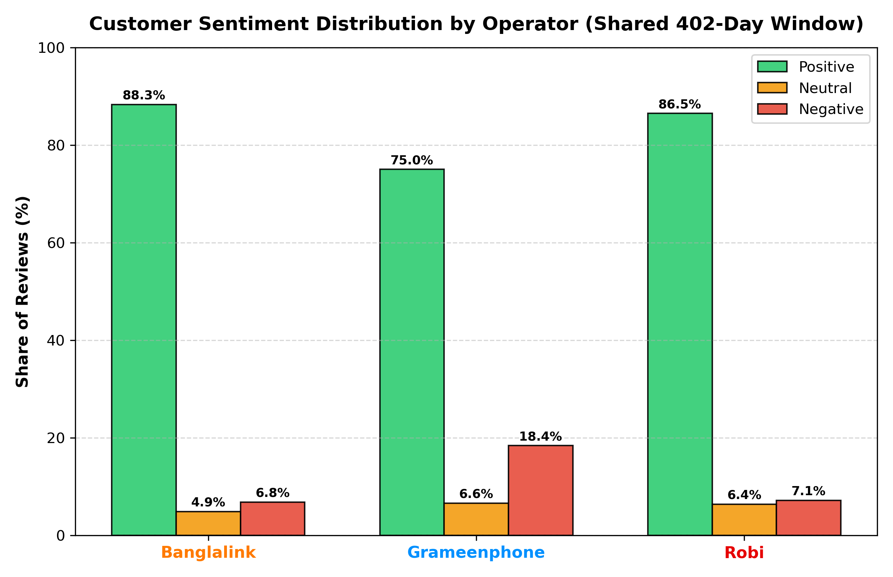
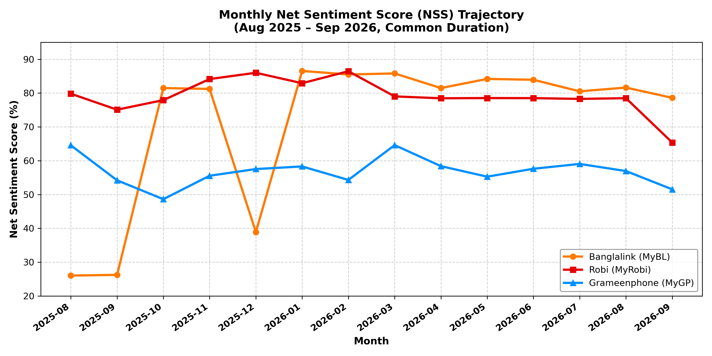
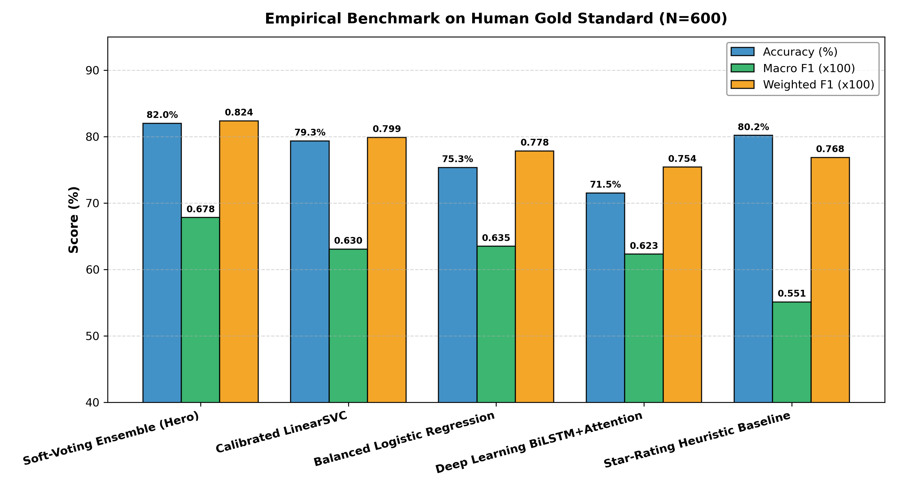
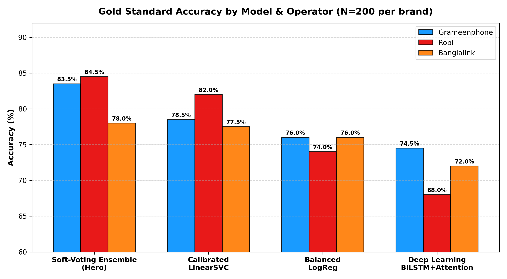
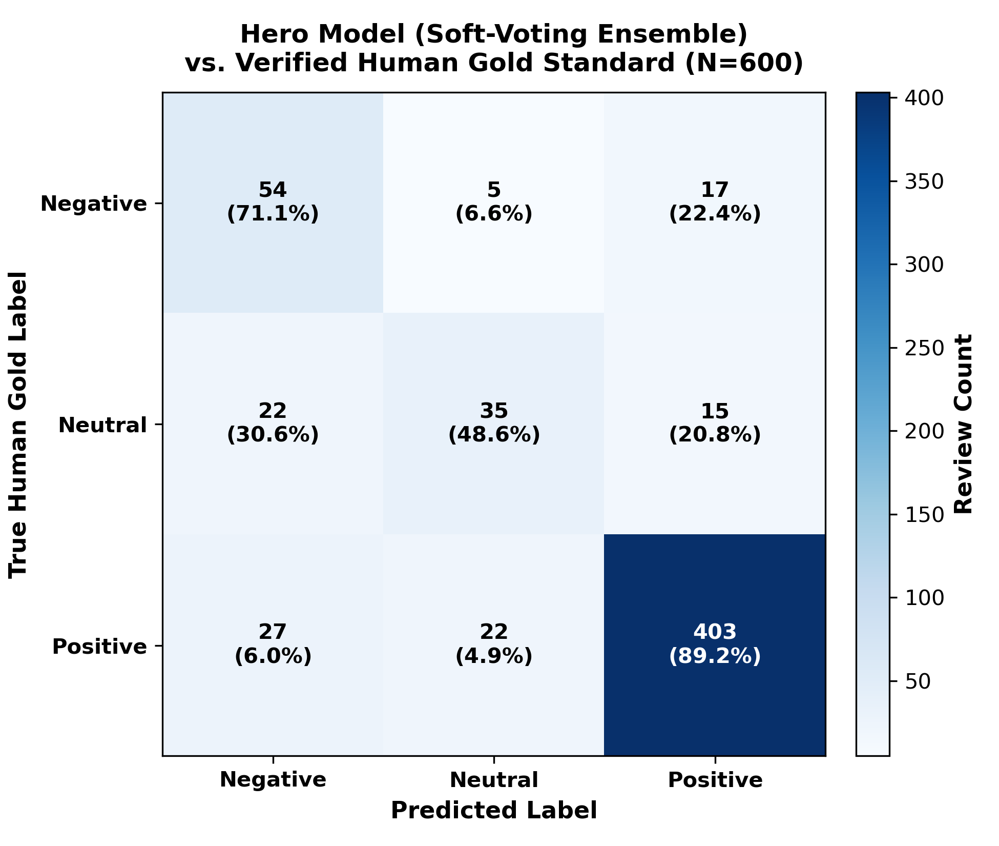
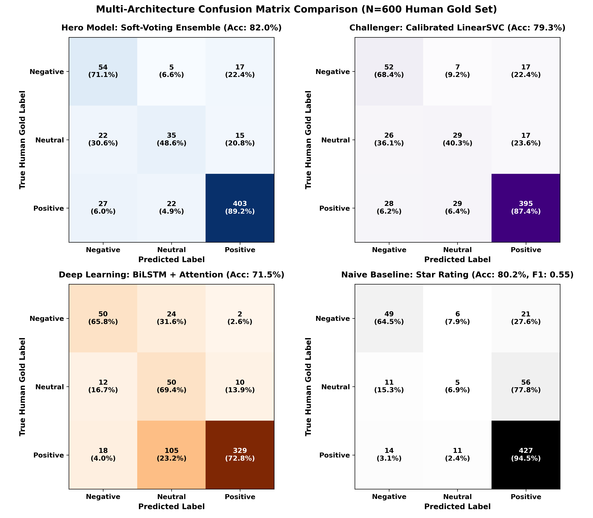

Telecom Voice-of-Customer (VoC) Intelligence Engine
An enterprise end-to-end NLP and Business Intelligence pipeline analyzing 83,417 standardized customer reviews across Bangladesh’s top three telecom operators (Grameenphone, Banglalink, and Robi Axiata) over a shared 402-day temporal window, benchmarked against a 100% human-verified Gold Standard ground truth.
Exact 402-day common temporal duration (Aug 2025 – Sep 2026) eliminating seasonal distortion.
Soft-Voting Ensemble (0.6781 Macro-F1) processing ~17,495 reviews/sec with Banglish fluency.
100% human-verified ground truth with 50% consensus, 30% model debates, and 20% slang edge-cases.
Cross-operator Net Sentiment: Banglalink +81.5%, Robi +79.4%, Grameenphone +56.6%.
Banglalink (MyBL)
+81.5% NSS28,068 reviews • 88.3% Positive
Digital Value Champion & Highest Goodwill
Robi Axiata (MyRobi)
+79.4% NSS33,825 reviews • 86.5% Positive
Highest Review Engagement & Lifestyle Leader

Grameenphone (MyGP)
+56.6% NSS21,524 reviews • 18.4% Negative
Premium Ecosystem Anchor with Pricing Friction
Market Sentiment Benchmarks & Temporal Trajectory
Net Sentiment Score (NSS) Comparison
Figure 1.1
NSS Formula: % Positive − % Negative. Banglalink leads at +81.5% through high-value promotional bundles, while Grameenphone (+56.6%) faces greater negative sentiment driven by data pack pricing and airtime deductions.
Sentiment Share Distribution by Operator
Figure 1.2
Class Balance: Banglalink achieves 88.3% positive sentiment and only 6.8% negative, compared to Grameenphone’s 18.4% negative rate. Robi balances high positive sentiment (86.5%) with strong customer review volume.
14-Month Longitudinal Sentiment Trajectory (Aug 2025 – Sep 2026)
Tracking Continuous Monthly Net Sentiment Across 402 Shared Days

The Engineering & Linguistic Challenge
Mobile self-care applications represent the primary interaction surface for over 180 million cellular connections in Bangladesh. However, app store customer feedback is extraordinarily noisy: subscribers fluidly interweave native Bengali script, standard English, and phonetically transliterated Banglish (e.g., "baje network", "purle offer", "faltu service").
Traditional lexicon-based models completely fail on phonetic spelling variance and regional sarcasm (e.g., sarcastically awarding 5 stars while writing "Best for looting customer balance"). Furthermore, raw review timelines are heavily distorted by seasonal events. Solving this required engineering a multi-paradigm architecture combining weak LLM supervision, temporal duration normalization, and human-in-the-loop Gold Standard validation.
8-Stage Closed-Loop Pipeline Architecture
The system executes eight sequentially linked phases from seed bootstrapping to production inference and evaluation:
Seed LLM Weak Supervision (N=4,500)
Extracted 1,500 reviews per operator via Google Play APIs. Ran zero-shot semantic normalization, 1-sentence English translation, and operational category tagging using Groq’s qwen/qwen3.8-27b.
Multi-Paradigm Supervised Model Training
Trained Classical ML (Balanced Logistic Regression, Calibrated LinearSVC, Soft-Voting Ensemble) and PyTorch Deep Learning (BiLSTM with Bahdanau Self-Attention & Char-CNN, Multilingual MiniLM).
Multi-Year Scraping & Temporal Alignment
Scraped reviews from 2020 through September 2026 (35 MB raw). Computed the continuous 402-day overlapping window (Aug 24, 2025 – Sep 30, 2026), isolating 83,417 standardized reviews.
High-Throughput Production Inference
Deployed our offline pre-trained models across all 83,417 reviews at ~17,495 reviews/sec on standard CPU, eliminating ongoing LLM API expenses.
Active Stress-Test Sampling (N=600 Candidates)
Stratified a 600-sample test set (200 per operator) composed of 50% Consensus cases, 30% Hard Multi-Model Disagreements, and 20% Low-Confidence Ambiguous cases (<65% confidence).
Interactive Human-in-the-Loop CLI Labeling
Built a custom terminal annotation engine with single-key entry, undo stack, and review-jumping. The author verified 100% of all 600 reviews to create the definitive ground-truth benchmark.
Empirical Model Benchmarking
Benchmarked all architectures against the Gold Standard. The Soft-Voting Ensemble emerged as the Hero Model (82.00% accuracy, 0.6781 Macro-F1), decisively outperforming naive star ratings.
Executive BI Translation & Publication Suite
Formulated Net Sentiment Scores, operational recommendations, and generated 7 publication-grade 300 DPI visualizations natively in Python.
Model Leaderboard Validated on Human Gold Standard
To scientifically identify the production Hero Model, all candidate architectures were benchmarked against the verified Gold Standard Dataset (N=600). Crucially, this evaluation set was intentionally loaded with 50% hard multi-model disagreements and ambiguous low-confidence cases, testing the true boundaries of each model:
| Model Architecture | Gold Accuracy | Macro F1 | Weighted F1 | Inference Speed | Production Verdict |
|---|---|---|---|---|---|
|
🏆
Soft-Voting Ensemble
TF-IDF Char N-Grams + Multi-ML
|
82.00% | 0.6781 | 0.8237 | ~17,495 rev/s | Official Hero Model • Best accuracy & Banglish resilience |
| Calibrated LinearSVC Challenger High-Speed Model | 79.33% | 0.6305 | 0.7987 | ~37,297 rev/s | Fastest inference; 98.9% consensus with Hero Model |
| Balanced Logistic Regression Class-Weighted Primary Baseline | 75.33% | 0.6347 | 0.7783 | ~37,891 rev/s | High recall on minority Neutral reviews |
| PyTorch BiLSTM + Self-Attention Neural Sequence Architecture | 71.50% | 0.6231 | 0.7541 | ~490 rev/s | Strong contextual semantics; sensitive to novel out-of-vocab slang |
| Star-Rating Heuristic Baseline Rule: 4-5★=Pos, 3★=Neu, 1-2★=Neg | 80.17% | 0.5510 | 0.7685 | Instant | Naive baseline; collapses on Neutral (F1=0.106) & Sarcasm |
Model Accuracy & Macro-F1 Comparison
Figure 2.1
The Soft-Voting Ensemble attains the highest harmonic balance between Macro-F1 (0.6781) and Gold Accuracy (82.00%), proving that soft posterior blending is superior to any single model.
Operator-by-Operator Model Performance
Figure 2.2
Ensemble achieves >83% accuracy on both Grameenphone and Robi. Banglalink features more slang contractions and emojis (🫠, nc app), where Ensemble still maintained the highest resilience (78.0%).
Hero Ensemble Confusion Matrix
Figure 2.3
Positive F1 = 0.909 (92.6% precision, 89.2% recall). Negative recall is 71.1%, effectively capturing critical customer churn triggers and billing complaints.
2×2 Multi-Model Confusion Matrix Grid
Figure 2.4
Comparative visualization showing how LinearSVC and Logistic Regression misclassify subtle neutral reviews, while BiLSTM struggles on out-of-vocabulary character sequences.
Empirical Linguistic Discoveries from Human Annotation
Bengali Sarcasm & Mockery
The reviewer sarcastically awarded 5 stars while writing "Best for looting [the customer] haha". Automated models were misled by the 5-star rating and keyword "সেরা" (best). Human verification caught this subtle socio-linguistic irony.
Rating-Text Disconnect
Mobile users frequently misclick 1 star while writing praise (*"Good"*). While naive star-rating heuristics completely fail, our Ensemble ML correctly prioritized linguistic semantics over misleading UI clicks.
Sub-Word Contractions
Character N-gram slicing in the Ensemble seamlessly matched "nc" to "nice", whereas word-level tokenizers in neural sequence models choked on slang contractions and novel emojis.
Actionable Business Recommendations by Operator
Banglalink (MyBL)
Agile Value Leader
- Migrate to Monthly Retention: Leverage high consumer goodwill to transition daily micro-deal users into recurring auto-renewal monthly bundles.
- In-App Coverage Diagnostic: Implement a 1-tap "Report Signal Drop" diagnostic to crowd-source micro-telemetry for semi-urban tower optimization.
- Peak-Hour OTP Redundancy: Optimize SMS gateway routes during evening transaction spikes to resolve login friction.
Robi Axiata (MyRobi)
Lifestyle & Engagement
- 1-Tap VAS Control Center: Deploy a centralized dashboard listing all active recurring debits with instant cancellation to safeguard goodwill.
- Gaming QoS Routing Micro-Passes: Introduce low-latency data passes with prioritized packet routing for the tech-savvy youth demographic.
- Intelligent Push Throttling: Apply ML to schedule personalized in-app notifications, preventing alert fatigue.
Grameenphone (MyGP)
Premium Anchor
- Validity Rollover Flex: Enable unused data to roll into the next recharge, directly mitigating customer dissatisfaction around rapid pack expiry.
- "Where Did My Balance Go?" Hub: Build a zero-click transaction timeline detailing SMS, call, data, and VAS debits down to the exact minute.
- Value-Added Perks Bundling: Offset price sensitivity by bundling digital perks (OTT streaming, health subscriptions) into standard data bundles.
Project Limitations & Threats to Validity
To ensure responsible analytical interpretation and scientific transparency, several inherent methodological and domain boundaries must be explicitly noted when evaluating Voice-of-Customer intelligence:
Perception vs. Technical Reality
This pipeline measures customer perception and sentiment; it does not audit Call Detail Records (CDRs) or spectrum QoS telemetry. Claims of "balance theft" often stem from automated background OS updates or unpaid emergency balances, while "zero speed" complaints may reflect handset misconfiguration or dense concrete indoor shielding rather than telco billing or network failures.
Voluntary Self-Selection Bias
Public app store reviews exhibit classic bimodal self-selection: users are disproportionately driven to submit feedback during emotional extremes — either intense delight (promotional reward unlocks) or acute frustration (service disruptions). The silent majority of daily users with stable, satisfactory connectivity rarely submits written reviews.
Gamified Review Distortion
Telco self-care apps (notably MyBL and MyRobi) regularly run gamified promotional incentives (spin-to-win, free 500MB login bonuses). A segment of customer commentary consists of brief promotional affirmations ("nice 5gb free pailam", "good app") written to unlock rewards, creating an upward bias in positive sentiment and Net Sentiment Scores.
Linguistic Sparsity & Banglish Variance
Romanized Banglish lacks standardized phonetic orthography (e.g., "valo", "bhalo", "bahlo", "bala"). Ultra-short reviews ("bad", "best", "...", "ok") lack contextual diagnostic depth, making it impossible to isolate whether friction relates to pricing, UI, or latency without broader operational telemetry.
Channel Demographic Restriction
The dataset exclusively represents Android smartphone subscribers utilizing digital self-care apps. It excludes iOS subscribers, feature-phone users relying on USSD (*121#) / IVR interfaces, and rural demographics who interact with telcos primarily through physical retail agents.
Macroeconomic & Tariff Context
Sentiment metrics reflect the specific macroeconomic conditions, inflation rates, and BTRC regulatory tariff floors active during the 402-day shared window (Aug 2025 – Sep 2026). Macro-level changes in consumer purchasing power can influence price sensitivity independently of operator service quality.